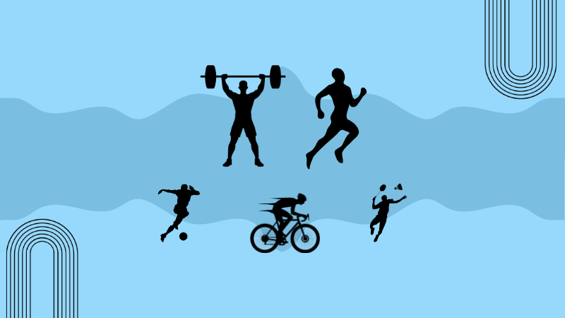
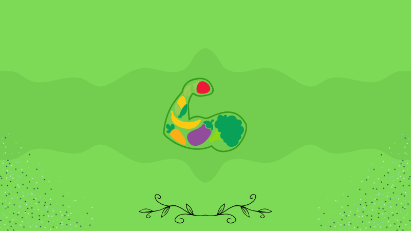
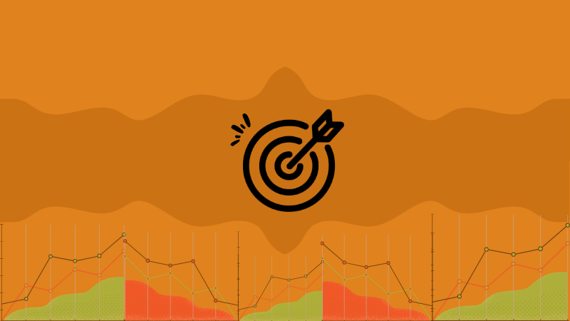

Bienvenue sur Building Athlete Review !
Découvrez ici la rude aventure d'Alexis Picot, un jeune athlète autodidacte qui a décidé de se consacrer à sa propre contruction, corporelle, mentale et athlétique afin de devenir un athlète hybride en pleine forme.
Ici, vous retrouverez tout ce qui touche à son projet sportif : entraînements, actualités, diète, matériel, état d'esprit et même des notions théoriques verifiées apprises en plein chemin.
Articles à consulter
Concepts Scientifiques
Comprendre le corps pour dépasser ses limites.

Entraînement
Construire chaque jour un corps plus rapide, plus fort, plus résistant.

Diète
Nourrir la performance, éliminer le superflu, viser l’efficacité.
Matériel
S’équiper intelligemment pour progresser sans limites.

Objectifs
Viser haut, planifier, exécuter, progresser sans compromis.
État d'Esprit
Forger un mental solide et avancer quoi qu’il arrive.